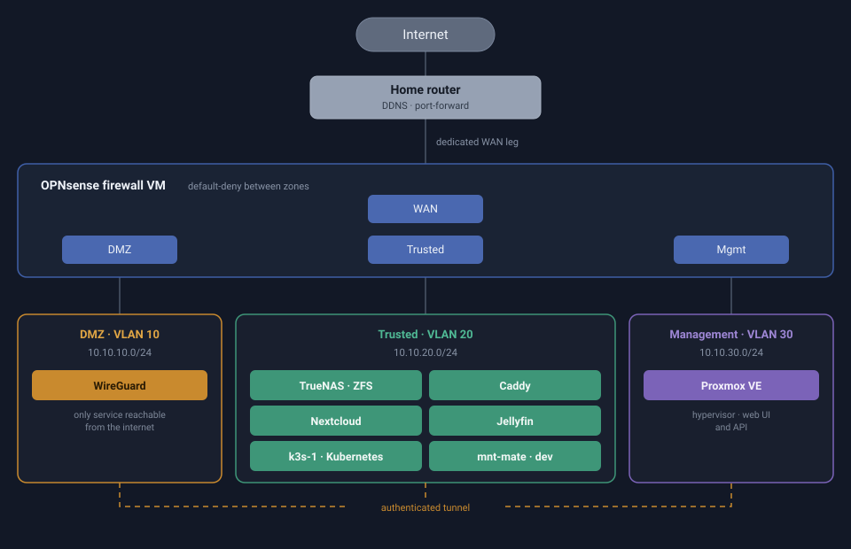

Personal Project: Self-Hosted Homelab Infrastructure
Ongoing personal infrastructure project built on a single refurbished mini PC, run as a small production environment rather than a lab toy. A Proxmox VE hypervisor hosts VMs and LXC containers across a network segmented into four zones with 802.1Q VLANs, trunked over a single physical link and mediated by a dedicated OPNsense firewall VM with a default-deny policy between zones. Storage runs on TrueNAS SCALE with ZFS, exported over NFS and SMB; services (Nextcloud, Jellyfin, Caddy) run in Docker Compose inside LXC containers, with WireGuard as the only entry point from the internet. Backups run nightly via rsync to an external SSD and were validated by an actual restore, checked at three levels: structural comparison of file listings, checksum verification, and playing back a restored video file. Base services are complete and validated; the VLAN segmentation is built and service migration is in progress. Every incident along the way has a written post-mortem covering symptom, diagnosis path, root cause and fix, including the wrong turns, because the wrong turn is usually the useful part.
Project status
47%- Phase 0 · Hardware 2/5
- Phase 1 · Base services 18/18
- Phase 2 · VLANs and firewall 7/14
- Phase 3 · Storage and RAID 0/2
- Phase 4 · IaC and Kubernetes 0/7
- Phase 5 · Monitoring and alerting 0/5
- Phase 6 · Documentation tooling 0/6
Skills Used
- Proxmox VE
- Virtualization
- Linux (Debian)
- LXC
- Docker / Docker Compose
- Self-Hosting
- OPNsense
- Firewall Rules
- Network Segmentation
- 802.1Q VLANs
- NAT / Port Forwarding
- DDNS
- WireGuard
- VPN
- Networking
- TrueNAS SCALE
- ZFS
- NFS
- SMB
- Caddy
- Nextcloud
- Jellyfin
- Bash
- systemd
- cron
- rsync
- Backup & Restore
- Disaster Recovery
- Root Cause Analysis
- Technical Documentation
- Git
Planned for later phases
- Kubernetes (k3s)
- OpenTofu / Terraform
- Ansible
- Prometheus
- Grafana
- GitHub Actions CI
